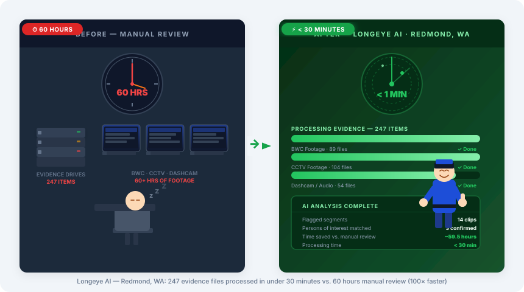
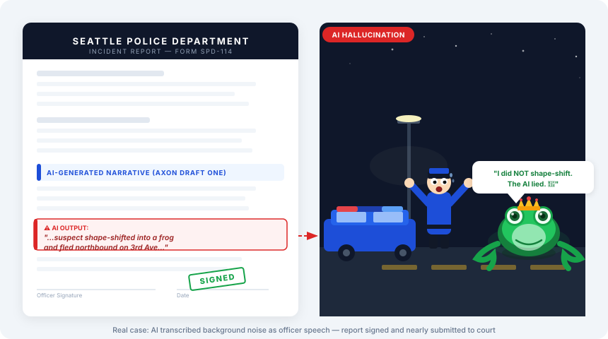

Police officers, firefighters, and paramedics are on the front lines of AI adoption—gaining powerful tools
that cut paperwork and save lives, while facing new legal risks, accuracy failures, and governance gaps that directly affect their work.
🎯 Presented to: STC President📅 June 2026⏳ State Deadline: July 1, 2026
🚔 Seattle Police Dept (SPD)🔥 Seattle Fire Dept (SFD)🚑 Emergency Medical Services (EMS)
Section 01
The High Stakes: Efficiency vs. Legal Liability
Departments are adopting AI because the time savings are undeniable—but the automated outputs are consistently flawed, creating courtroom exposure and compliance gaps.
Independent Evidence Disputes the Vendor Claim[13]
A pre-registered randomized controlled trial of Axon's "Draft One" (Adams et al., Journal of Experimental Criminology, 2024) found no statistically significant reduction in report-writing time — directly contradicting the vendor's 82% time-savings claim. The null result held across every robustness check the authors ran, including a full-year difference-in-differences analysis. Their explanation: AI can speed up narrative drafting, but the bulk of report time is manual data entry (people, evidence, property) that AI assistance doesn't touch. This was raised directly by Seattle PD's Senior Research Scientist in a June 16, 2026 planning meeting — see meeting notes. Takeaway for this brief: the time-savings pitch should not be the lead argument for AI-assisted report writing — consistency, QA, and accountability gains are the more defensible case, and are exactly how SPD itself is currently scoping AI use (see Section 04).
Critical medical details dropped from translations
Brady material exposure if officers sign AI errors
King County PA refuses AI-produced narratives
Independent RCT found no significant time savings[13]
Real-World Efficiency Example — Redmond, WA

Longeye[2] — digital evidence processed up to 100× faster than manual review; deployed in Redmond, WA
Real-World Hallucination Examples
AI Report Accuracy Rate
CorrectError
Ghost Officer Hallucination[4]
AI-generated report included a statement from a non-existent officer and invented scene details. Signed report = immediate Brady material issue — the prosecution is legally required to hand that fabrication to the defense.
Heber City, Utah — AI Report Claimed Officer Shapeshifted Into a Frog[4]
An AI-generated police report in Heber City, Utah mistakenly claimed a police officer had shapeshifted into a frog. The report was unusable in court and became a documented case study in unreviewed AI output entering the legal record.

Real case: Heber City, Utah — AI-generated police report mistakenly claimed an officer shapeshifted into a frog
Medical Translation Failure[6]
AI-assisted translation of emergency calls has been documented to drop or mistranslate critical medical terms — removing triage indicators before they reach the responding crew.
The King County PA's Office has issued a formal memo refusing to accept AI-produced narratives in charging documents. Officers who sign AI-drafted reports with fabricated facts face immediate Brady material[5] exposure and potential courtroom impeachment. Brady material refers to any evidence favorable to the defendant that the prosecution is legally required to disclose (Brady v. Maryland, 1963). An AI-fabricated statement in a signed report qualifies — and can unravel an entire case.
Snapshot
Corresponding Risks — KPIs That Move With AI
For every efficiency gain AI introduces, a corresponding risk moves in the opposite direction. Both directions require active management.
KPI
Movement with AI
Direction
Tools
Report writing time
Vendor claims sub-minute drafts; independent RCT found no significant change[13]
▬ Disputed
Code Four · Draft One
Report accuracy / Brady compliance
AI hallucinations introduced at scale; defense can impeach
▼ Negative
Code Four · Draft One
Cardiac arrest recognition
Near-instant detection at 95% accuracy
▲ Positive
Corti
Clinical translation accuracy
AI drops anatomical & symptom terms ("turning blue")
▼ Negative
Prepared · Corti
Wildfire early detection
Up to 25 min earlier than first 911 call
▲ Positive
PanoAI
Racial disparity in enforcement
Predictive tools amplify historical bias
▼ Negative
Predictive patrol
Section 02
Why Action Is Required Now
Three converging pressures—procurement outpacing policy, unmet Seattle mandates, and imminent state deadlines—make this a now issue, not a later issue.
Approved and submitted to the legislature. Requires public disclosure of AI tool use by law enforcement agencies and explicit officer attestation of accuracy for all AI-assisted documents. Requirements are scaled to agency capacity — a small rural department is not held to the same infrastructure standard as Seattle PD — but human oversight is non-negotiable for all. Officers who sign AI-generated reports without review bear full professional and legal liability.
Deployment Risk Matrix
Low Severity
Med Severity
High Severity
Low Likelihood
✓ Monitor
✓ Monitor
⚠ Review
Med Likelihood
✓ Monitor
⚠ Review
🚫 Control
High Likelihood
⚠ Review
🚫 Control
🔴 BLOCK
AI-generated charging documents and unverified BWC summaries fall in the BLOCK zone.
Unsigned draft reports with human review fall in the Review zone.
Section 03
Operational Guardrails: The Traffic Light Framework
The proposed academic curriculum establishes a strict three-tier framework governing how first responders may use AI tools—from approved daily operations to activities that are strictly banned.
GREEN — Approved Use
Fleet routing & scheduling
Bulk evidence processing (with human verification)
Translated public safety announcements
Administrative scheduling & resource allocation
YELLOW — Pilot / Verified Only
BWC summarization for training only
Draft incident reports with mandatory manual redlining
Requires supervisor sign-off before any official use
RED — Strictly Banned
AI-written charging documents
Signing anything under penalty of perjury without full human verification
Running unvetted consumer AI (e.g., public ChatGPT) on CJIS or health data
State-Endorsed Framework
NIST AI RMF — Formally Adopted by the WA State AI Task Force [12]
The WA State AI Task Force formally adopted the NIST AI Risk Management Framework as its foundational governance model — with an added emphasis on "public purpose and social benefit" for public sector use. The Traffic Light framework maps directly onto NIST's four core functions:
GOVERN
Policies, roles, accountability structure
MAP
Identify AI use cases and risk context
MEASURE
Assess likelihood and impact of AI risks
MANAGE
Respond to, mitigate, and monitor AI risks
Green = Manage with monitoring · Yellow = Measure + Manage with oversight · Red = Map identifies ban-level risk
Section 04
Does Seattle Already Have a Framework Like This?
Short answer: no published, tiered framework — but SPD is further along than public records suggest. A direct briefing with SPD leadership on June 16, 2026 surfaced real, in-progress AI governance work that isn't reflected in any published policy yet.
🔍
Research Finding — No Published Local Framework, But Active Internal Work
A review of published policy from the City of Seattle, Seattle Police Department, Seattle Fire Department, and King County EMS found no equivalent to the Green / Yellow / Red tiered framework. However, an SPD planning meeting[meeting notes] revealed SPD already has an AI policy draft sitting with its policy unit for review (legal and privacy have signed off), a closed/private Claude instance being phased in under a low-risk → medium-risk → high-risk rollout plan, and two narrower AI tools already moving through privacy approval — none of which constitute a published tiered framework, but all of which are real governance infrastructure this brief should account for rather than treating SPD as a blank slate.
Who Has a Framework — and What It Covers
Organization
What Exists
Tiered AI Framework?
Seattle (City IT)
Surveillance Ordinance — requires impact review before adopting surveillance tech
❌ No
Seattle Police (SPD)
No published policy or tool classification — but an AI policy draft is in active review (legal + privacy cleared, now with policy unit), and a closed Claude instance is rolling out in phased risk tiers internally[notes]
Rec 3: law enforcement disclosure + officer attestation approved and submitted to legislature. NIST AI RMF formally adopted. No tiered operational use categories yet — but the legal mandate for human oversight is now state policy.
⚠️ In Progress
IACP / DOJ / PERF
Principles-based guidance and research reports — no operational tier system
❌ No
NIST AI Risk Management Framework
Govern / Map / Measure / Manage — general risk framework, not public-safety-specific
None of this is published policy, but it is real and currently deployed or in approval — and notably, SPD is leading with QA/consistency use cases, not narrative generation, which lines up with the independent evidence above.
📝 CaseX / Corvus
AI-assisted public online crime reporting — cleared privacy review. Citizen reviews and approves the AI-drafted report before submitting.
✅ Mark 43 QA prompts
RMS vendor's quality/completeness checks on existing reports (e.g., flags a missing hospital name). Submitted for privacy approval.
🔎 Planned NLP supervisor review
Flags poorly articulated reasonable suspicion / probable cause for supervisor QA — training and accountability tool, not drafting.
🤖 Closed Claude instance
City-procured, SPD-specific, private deployment with MCP-based knowledge base. Currently restricted to low-risk, public-data-only use cases while security/roles are configured; medium and high-risk phases planned next.
CJIS / PII constraint still unresolved: SPD employees may not enter protected data into any generative AI system, which is the reason for the closed instance rather than a public cloud model — and remains an open question for how AI-assisted report writing could ever touch CJIS-dependent narratives.
Structural Precedent
The EU AI Act — The Closest Existing Model
The EU AI Act (2024)[11] is the world's first binding legal framework that classifies AI by risk tier. It bans certain AI applications outright, tightly regulates high-risk uses (including law enforcement), and permits low-risk uses freely. The Traffic Light framework proposed here adapts this same logic to the day-to-day operational reality of first responders — with Green, Yellow, and Red mapped directly to the EU Act's Minimal, High, and Unacceptable risk categories.
EU — Minimal Risk
→ Our Green Tier
Permitted with transparency obligations
EU — High Risk
→ Our Yellow Tier
Permitted with human oversight & documentation
EU — Unacceptable Risk
→ Our Red Tier
Banned — prohibited regardless of context
💡
The Gap Is the Argument
Seattle's own responsible AI page and its AI Policy (POL-211) confirm a citywide framework exists — but neither document mentions police, fire, EMS, or any tiered governance for public safety operations. Washington State now has the legal mandate (Rec 3) but not the operational tiers. The EU AI Act demonstrates that tiered governance is feasible at scale. What is proposed here is not a new idea — it is the locally missing implementation of a state-mandated requirement.
Section 05
Policy Gaps That Need Attention
These open questions represent the critical gaps between how AI is currently being used in the field and the governance frameworks that need to catch up.
1
Mandatory vs. Voluntary Training
Should AI literacy training be required for all personnel who use AI tools, or offered as an optional professional development track?
Mandatory for AI usersVoluntary / opt-inRole-based requirement
2
Attestation Language & Legal Review
Officers must attest to report accuracy before signing. Who drafts the attestation language—legal counsel or union reps?
City legal counselDept. + union jointLegal + union co-draft
3
Approved Tool List Governance
Which body maintains and updates the approved AI tool list (Green/Yellow/Red tiers) as new products enter the market?
IT procurement officeDept. AI committeeSTC advisory role
4
Incident Reporting for AI Errors
Should AI hallucinations and errors in official documents be reportable incidents? Who tracks them and what triggers escalation?
Existing IA processNew AI incident logAnonymous reporting portal
5
Curriculum Delivery Mode
How should the training be delivered given shift schedules and varying technology access across units?
Should the training rollout target completion before the July 1, 2026 WA State Task Force deadline to be in compliance?
Full rollout by July 1Pilot unit firstPolicy first, training later
7
Collective Bargaining — When Does the Union Have a Say? [12]
WA State Recommendation 4 (aligned with HB 1622) gives public sector workers the right to bargain over AI adoption — before deployment — when AI affects wages, job security, or performance evaluation. First responder unions currently only bargain over impacts after the AI is already live. Does this need to change before any tool is approved?
Pre-deployment union inputJoint AI adoption committeeExisting CBA sufficient
Section 06
Recommended Next Steps
Start with a single 1–2 hour seminar. No budget committee. No 90-day plan. Just get the right people in a room with the right questions — and let the workshop follow from that.
Step 1 — Immediate
The Seminar: "AI & the First Responder — What You Need to Know Now"
A 1–2 hour facilitated session for command staff, union reps, and department leadership. No laptops required. Designed to surface the right decisions — not make all of them.
What gets covered
What AI tools are already in your department
What WA State Rec 3 requires of officers by July 1
What happens when an officer signs an AI-generated report without reading it
The Green / Yellow / Red decision framework — 20-minute walkthrough
What labor rights exist under Rec 4 before any new tool goes live
Who should be in the room
Shift commanders / division leadership
Union steward or rep
IT / procurement point of contact
Training officer
One or two frontline officers using AI tools today
Format: Presentation (30–40 min) → Q&A + open policy discussion (30–40 min) → optional: decision card exercise identifying your department's top 3 gaps. Delivered by STC. No prior AI knowledge required.
↓ seminar surfaces what the department actually needs ↓
Path A — If urgency is high
Half-Day Workshop
Hands-on: classifying your existing tools Green / Yellow / Red, drafting attestation language, building the incident log. Officers leave with artifacts they can actually use.
Path B — If buy-in is the goal
Formal Curriculum Partnership
STC builds a department-specific AI literacy course. Delivered on-site or online. Completion counts toward professional development hours. Scales across SPD, SFD, and EMS.
Path C — If policy is the gap
Advisory Engagement
STC works alongside legal counsel and union reps to develop the attestation language, tool classification policy, and compliance timeline. Positions STC as the institutional expert, not just a course vendor.
One Room. Two Hours. That's the Ask.
First responders are already using these tools. The July 1 deadline is real. The seminar is how you find out where your department actually stands — before an AI-generated error ends up in court.
[5]Legal Information Institute — Brady Material (Brady v. Maryland, 1963). Prosecution must disclose evidence favorable to the defendant; fabricated AI content triggers mandatory disclosure.
[6]NIH / PubMed Central — Ethical Risks and Structural Implications of AI-Mediated Medical Interpreting. Documents how AI translation systems alter critical clinical terms without obvious failure signals — e.g., "chest pressure" rendered as "discomfort," fundamentally changing clinical interpretation. Identifies literal rendering, inconsistent terminology mapping, and loss of urgency as failure modes in emergency and consent encounters.
[7]Electronic Frontier Foundation — Prosecutors in Washington State Warn Police: Don't Use Gen AI to Write Reports (Oct 2024). Covers the King County Prosecuting Attorney's internal memo issued by Chief Deputy Daniel J. Clark: "We do not fear advances in technology — but we do have legitimate concerns about some of the products on the market now." Office will not accept any police narratives produced with AI assistance; errors can be "so small that they will be missed in review," even though officers attest accuracy under penalty of perjury.
[8]Code Four — AI for Law Enforcement. Automated incident report drafting and workflow tooling for police departments.
[9]City of Seattle — City of Seattle 2025–2026 AI Plan (PDF). Four-pillar strategy including Pillar 3: Workforce Upskilling — equipping all 13,000+ city employees with AI literacy through phased training, data science workshops, and university/private-sector partnerships. Public safety applications include AI for 911 translation services and communications.
[10]Washington Technology Solutions (WaTech) — Washington State Generative AI Policy (DATA-04), December 2025. Establishes state agency guidelines for generative AI adoption, risk assessment, data privacy, and governance — the policy foundation on which the AI Task Force recommendations build.
[11]European Parliament — EU AI Act (2024). World's first binding AI governance law; classifies AI by risk tier — Unacceptable Risk (banned), High Risk (regulated with human oversight), and Minimal Risk (permitted). The structural precedent for the Green / Yellow / Red framework proposed here.
[13]Adams, I. T., Barter, M., McLean, K., Boehme, H. M., & Geary Jr., I. A. — "No man's hand: artificial intelligence does not improve police report writing speed", Journal of Experimental Criminology 22 (2024): 137–154. Pre-registered RCT at a medium-sized PD (n=85 officers, 755 reports) testing Axon's Draft One; found no statistically significant reduction in report-writing time, robust across multiple model specifications and a full-year difference-in-differences check. Raised directly by SPD's Senior Research Scientist in the June 16, 2026 CityU–SPD meeting.